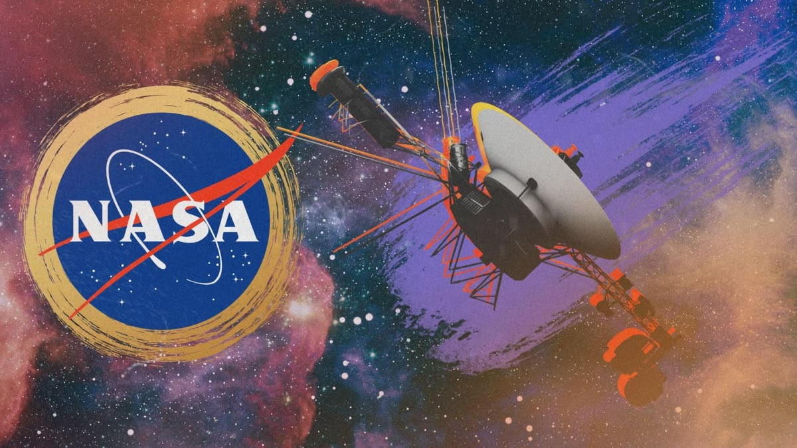
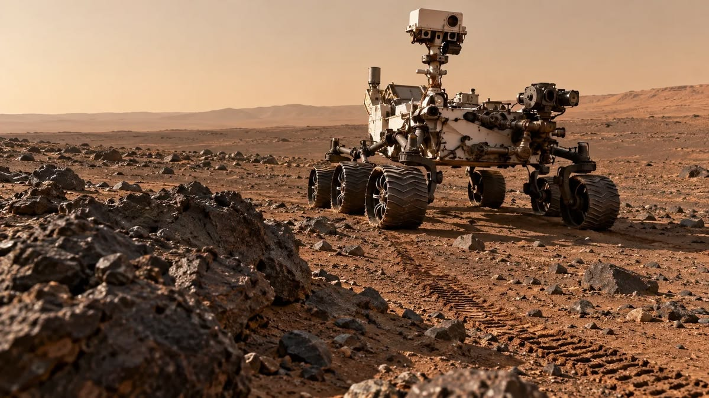
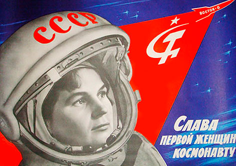

NASA — Estados Unidos

O robô Perseverance
O Perseverance é um robô explorador da NASA. Ele foi lançado em 30 de julho de 2020 e pousou em Marte em 18 de fevereiro de 2021. Sua missão é estudar o planeta e procurar sinais de vida microbiana antiga.

Missão Perseverance: exploração de Marte
A missão Perseverance é uma missão espacial da NASA que tem como objetivo explorar Marte, estudar suas características e investigar se o planeta já teve condições para abrigar vida no passado. O robô foi lançado em 30 de julho de 2020 e chegou a Marte em 18 de fevereiro de 2021.
Principais objetivos da missão
- Procurar sinais de vida antiga: analisar rochas e o solo em busca de evidências de vida microscópica que possa ter existido no passado.
- Estudar o planeta: investigar o clima, a geologia e a composição de Marte.
- Coletar amostras: guardar fragmentos de rochas e solo para possíveis análises futuras na Terra.
- Preparar futuras missões: testar tecnologias que poderão ajudar astronautas a explorar Marte no futuro.
Como o robô funciona
- Programação: controla as atividades do robô.
- Sensores e câmeras: coletam informações e imagens.
- Inteligência artificial: auxilia na navegação autônoma.
- Comunicação: envia dados de Marte para a Terra.
☭ URSS — União Soviética
A pesquisa em astrofísica na União Soviética
A União Soviética foi pioneira da era espacial. Seu programa, liderado pelo engenheiro-chefe Serguei Korolev, abriu caminho para quase tudo o que veio depois.

Principais conquistas
| Ano | Conquista | O que foi |
|---|---|---|
| 1957 | Sputnik 1 | Lançou o primeiro satélite artificial da Terra (4 de outubro). |
| 1957 | Laika e a Sputnik 2 | Primeiro animal a orbitar a Terra (3 de novembro). |
| 1959 | Luna 2 e Luna 3 | A Luna 2 foi a primeira sonda a atingir a Lua; a Luna 3 fotografou seu lado oculto. |
| 1961 | Yuri Gagarin | Primeiro ser humano a viajar para o espaço, a bordo da nave Vostok 1 (12 de abril). |
| 1963 | Valentina Tereshkova | Primeira mulher a viajar para o espaço, na Vostok 6. |
| 1965 | Alexei Leonov | Realizou a primeira caminhada espacial da história, na missão Voskhod 2. |
| 1966 | Luna 9 | Realizou o primeiro pouso suave bem-sucedido de uma sonda na Lua. |
| 1970 | Venera 7 | Primeira sonda a pousar em outro planeta (Vênus) e transmitir dados. |
| 1971 | Salyut 1 | Foi a primeira estação espacial do mundo. |
| 1986 | Estação Mir | Início da construção de uma estação modular que ficou mais de 15 anos em órbita. |
Importância para a astronomia
A União Soviética contribuiu para o avanço da ciência e da tecnologia espacial. Suas missões ajudaram a estudar a Terra, a Lua e o espaço, além de desenvolver tecnologias para viagens espaciais. A competição com os Estados Unidos, a chamada Corrida Espacial, acelerou a exploração espacial mundial.
Principal agência da União Soviética
A principal agência de inteligência, segurança interna e polícia secreta da União Soviética era o KGB (Komitet Gosudarstvennoy Bezopasnosti, ou Comitê de Segurança do Estado), ativo de 1954 a 1991.
Importante: o KGB cuidava de segurança e espionagem, não de ciência espacial. O programa espacial soviético era conduzido por birôs de projetos, como o OKB-1 de Korolev, e sua herança hoje está na Roscosmos.
Outras agências e organizações que estudam o espaço
Além da NASA e da antiga URSS, muitos países têm agências dedicadas a estudar e explorar o espaço.
| Agência | País / Região | O que faz |
|---|---|---|
| ESA | Europa | Estuda o Universo, planetas e galáxias, além de desenvolver satélites e participar de missões espaciais. |
| CNSA | China | Desenvolve missões espaciais, explora a Lua e participa da exploração de Marte. |
| ISRO | Índia | Desenvolve foguetes e satélites e realiza missões de exploração da Lua e do Sol. |
| JAXA | Japão | Pesquisa asteroides, planetas e outros corpos celestes por meio de sondas e missões espaciais. |
| ROSCOSMOS | Rússia | Desenvolve missões espaciais, foguetes e naves, além de participar de atividades na Estação Espacial Internacional. |
| AEB | Brasil | Coordena atividades espaciais brasileiras, incluindo projetos de satélites e o desenvolvimento do setor espacial nacional. |
Observação: essas organizações são principalmente agências espaciais. A astronomia também é estudada por universidades, observatórios e institutos científicos que investigam estrelas, galáxias e a origem do Universo.